WhatsApp Attendance Tracker n8n Workflow: Complete Automation Tutorial
A Beginner's Complete Guide to Automating Employee Attendance via WhatsApp Messages
The Attendance Tracker workflow is a fully automated solution built in n8n to streamline the process of employee attendance tracking using WhatsApp as the entry point. Instead of manual record-keeping or specialized HR software, this workflow leverages familiar, everyday tools (WhatsApp, Google Sheets, Google Drive, and Telegram) to ensure attendance data is quickly captured, centrally logged, faithfully archived, and promptly communicated—all with minimal effort from employees and HR/Admin.
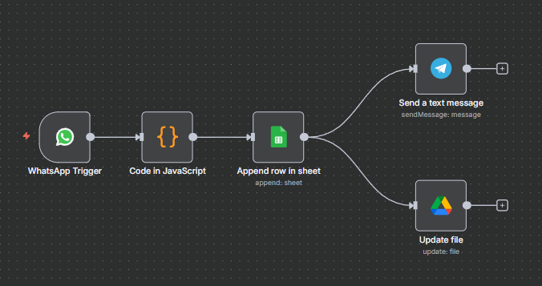
Key Uses of This Project:
- Captures attendance easily: Employees just send a WhatsApp message (like "IN" or "OUT")—no complex app or hardware required.
- Saves attendance automatically: Each message is recorded in a Google Sheet for accurate, real-time logs.
- Sends instant notifications: Users get Telegram alerts every time attendance is marked, so nothing is missed.
- Keeps records safely: Updates and saves the attendance file to Google Drive for backup and sharing.
- Reduces human error: Removes manual entry, helps avoid mistakes, and saves time for everyone.
The WhatsApp Attendance Tracker n8n workflow is a fully automated employee attendance system that eliminates manual record-keeping. This beginner-friendly n8n workflow automation tutorial shows you how to build a real-time attendance tracking solution using WhatsApp Business API, Google Sheets, Google Drive, and Telegram notifications. With no coding experience required, you'll learn to capture employee check-ins directly from WhatsApp messages, automatically log attendance data, and send instant confirmation alerts—all through a seamless automated workflow.
Introduction
This n8n workflow is designed to automate and digitize employee IN/OUT attendance recording:
What You'll Learn
- WhatsApp Integration: Capture and automate incoming attendance messages.
- Google Sheets Automation: Log each IN/OUT with accurate timestamps in a spreadsheet.
- Google Drive Sync: Automatically update/export your attendance file for backup or distribution.
- Telegram Notifications: Instantly confirm entries to HR/admins via chat.
- JavaScript Parsing: Use a Code node to extract and format message details inside n8n.
- End-to-End Automation: Combine all tools into one seamless, no-code workflow.
How it works:
Employees simply send a message (like “Kumar OUT 7:30pm”) to a designated WhatsApp number. The workflow automatically parses out the employees name, IN/OUT status, and time, and records this data in a Google Sheet for real-time logging.
What happens next:
The system updates or exports the attendance file to Google Drive for backup or sharing. Then, to provide instant feedback, it sends a confirmation message directly to an HR or admin group on Telegram.
Ideal for:
Small-to-medium businesses, educational institutions, remote teams, or any workplace looking for a cost-effective, automation-first approach to attendance tracking—without investing in expensive software.
Prerequisites:
- n8n account (self-hosted or cloud).
- WhatsApp Cloud API.
- Google account (Sheets & Drive).
- Telegram account (app and bot).
1. How to Import the Workflow in n8n
Step-by-step:
- Log in to n8n.
- Click Import (top or sidebar).
- Upload your project file:
Attendance Tracker.json. - The workflow appears on the n8n canvas, auto-populating all node names and settings.
2. API Credential Setup & Service Provisioning
2.1 WhatsApp Cloud API (Example Approach)
A. Get WhatsApp API Credentials from Meta (Facebook) Developer Portal
- Go to Facebook Developers and log in.
- Create a new App (for your business integration).
- Under Add Products, select “WhatsApp”.
- Set up and confirm your phone number in WhatsApp Cloud API.
- Navigate to Settings ⟶ Basic for your app:
- Client ID: Copy this value.
- Client Secret: Reveal and copy this value.
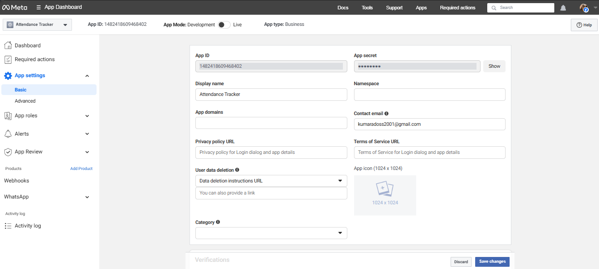
B. Set Up OAuth Flow in Developer Console
- Go to Settings ⟶ Advanced ⟶ OAuth Settings.
- Add your n8n instance's OAuth callback URL:
- Select code as OAuth flow type (default for n8n).
https://YOUR-N8N-DOMAIN/rest/oauth2-credential/callback
C. Set Up Webhook in Meta Developer Console
- In your WhatsApp app’s settings, go to the Webhook section.
- Add your n8n Webhook URL (from your WhatsApp Trigger node: looks
like
https://n8n.yourdomain.io/webhook/ba0dccbc-7c1b-468a-b5d4-2942d7df8dc7). - Subscribe to:
messagesmessage_status(for delivery info and status updates).
D. Create WhatsApp OAuth Credentials in n8n
- In n8n, go to Credentials.
- Click New Credential → Search for “OAuth2 API”.
- Fill the following fields:
- Client ID: Paste from Facebook Developer portal.
- Client Secret: Paste from Facebook Developer portal.
- Save Credential.
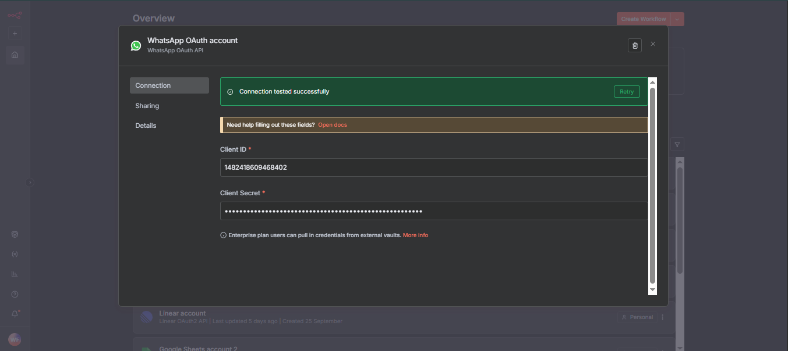
2.2 Google Sheets & Google Drive (OAuth2)
A. Overview: Used for appending payroll data and saving drive files. Requires Google Sheets/Drive API and OAuth2 with Calendar/Drive/Sheets scopes.
B. Steps to Provision:
- Create Google account and login to Google Cloud Console.
- Create a new project.
- Enable “Google Sheets API” and “Google Drive API”.
- Go to “APIs & Services → Credentials → Create credentials → OAuth client ID”
- Set “Application type”: Web App.
- Redirect URI (n8n):
- For n8n cloud:
https://app.n8n.cloud/rest/oauth2-credential/callback - For self-hosted:
http://localhost:5678/rest/oauth2-credential/callbackor your deployed domain. - Give consent screen info and click “Create”.
- Copy
CLIENT_IDandCLIENT_SECRET. - Save these for n8n set-up.
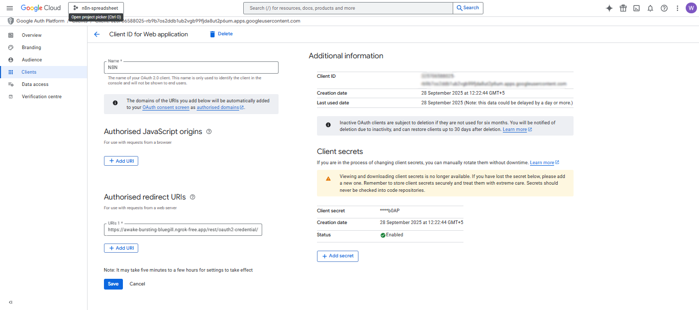
C. n8n Credential Setup:
- Go to Credentials > New > Google Sheets/Google Drive OAuth2.
- Paste Client ID, Client Secret.
- Redirect URI: copy from n8n credential setup screen.
- Test and save.
D. Test & Verify:
- Open Google Sheets/Drive node in n8n, click "Test Credential".
- Should return OK with 200, file and sheet access confirmed.
- For errors: check scope, redirect URI, and client type.
2.3 Telegram (Bot Token)
A. Overview: Telegram node sends payroll notifications. Needs Telegram bot token and chat/user ID.
B. Steps to Provision:
- Open Telegram app.
- Search @BotFather, start chat.
- Send
/newbot, follow prompts (name and username). - Copy returned Bot Token.
- (Optional) Set description, photo: /setdescription, /setuserpic.
- Send /setprivacy to toggle privacy if using in group.
- Paste token in n8n credential.
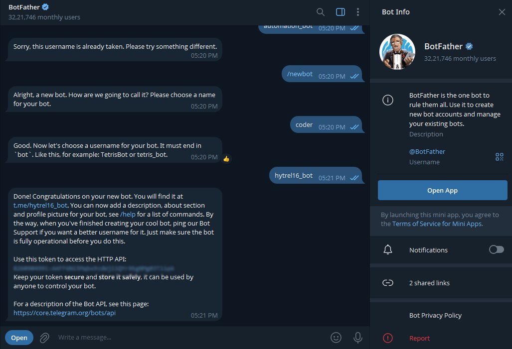
C. Get Telegram Chat/User ID:
- Search @hytrel16_bot, send
/start. - Receives reply: “Your Telegram ID: 123456789”
D. Test & Verify:
- Open Google Sheets/Drive node in n8n, click "Test Credential".
- Should return OK with 200, file and sheet access confirmed.
- For errors: check scope, redirect URI, and client type.
3. Add WhatsApp Trigger Node
- Add a WhatsApp Trigger node.
- Connect it to your WhatsApp Business API or preferred provider (Twilio, WATI, etc.).
- Configure OAuth/API credentials in
WhatsApp OAuth account. - Set up webhook in your provider to point to the node’s webhook URL.
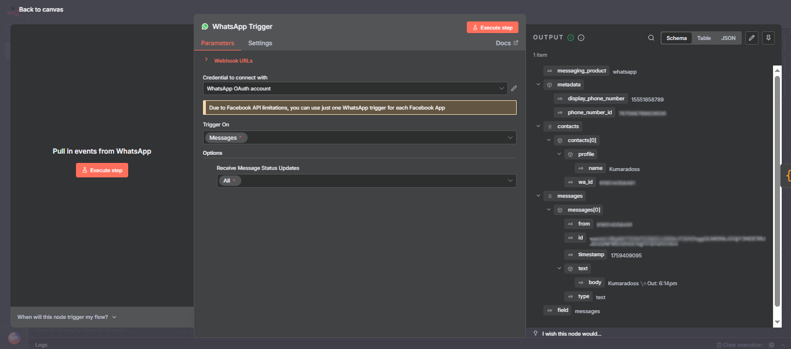
Quick Reference Table
| Field | Example Value / Source |
|---|---|
| Client ID | Facebook App Settings |
| Client Secret | Facebook App Settings (revealed) |
| Authorization URL | https://www.facebook.com/v17.0/dialog/oauth |
| Access Token URL | https://graph.facebook.com/v17.0/oauth/access_token |
| API Base URL | https://graph.facebook.com/v17.0/ |
| Scope | whatsapp_business_messaging |
| Callback URL | From n8n credentials config |
4. Add a Code (JavaScript) Node
- Drag in a Code node; name it “Parse WhatsApp Message”.
- Connect it after WhatsApp Trigger.
- Use this code to extract name, IN/OUT status, time, and date:
// Timing check: Only allow processing between 8:00 - 20:00 IST (adjust as needed)
const now = new Date();
const hoursIST = now.toLocaleString('en-US', { hour: '2-digit', hour12: false, timeZone: 'Asia/Kolkata' });
const hour = parseInt(hoursIST, 10);
// Block/stop workflow if current time is not in allowed window
if (hour < 9 || hour > 20) {
return []; // Return empty = skip/stop node chain
}
// --- Parse WhatsApp payload ---
const data = items[0].json;
// Get the exact user message as sent (original case)
const userMessage = data.messages?.[0]?.text?.body || "";
// Extract employee info
const name = data.contacts?.[0]?.profile?.name ||
userMessage.split(' ')[0] ||
"Unknown Employee";
// Determine status from message (IN/OUT), case insensitive
const messageText = userMessage.toLowerCase();
const status = messageText.includes("out") ? "OUT" : "IN";
// Convert timestamp to IST
const timestamp = new Date(parseInt(data.messages?.[0]?.timestamp) * 1000);
// Format time as 12-hour with AM/PM (IST)
const timeOptions = {
hour: '2-digit',
minute: '2-digit',
hour12: true,
timeZone: 'Asia/Kolkata'
};
let time = timestamp.toLocaleTimeString('en-IN', timeOptions);
// Ensure AM/PM is uppercase
time = time.replace(/\s?(am|pm)/i, match => match.toUpperCase());
// Format date as dd/mm/yyyy (IST)
const dateOptions = {
day: '2-digit',
month: '2-digit',
year: 'numeric',
timeZone: 'Asia/Kolkata'
};
const date = timestamp.toLocaleDateString('en-GB', dateOptions);
return [{
json: {
Name: name,
Status: status,
Time: time, // 12-hour IST with AM/PM
Date: date,
UserMessage: userMessage, // Separate column for user's original message
rawTimestamp: data.messages?.[0]?.timestamp
}
}];
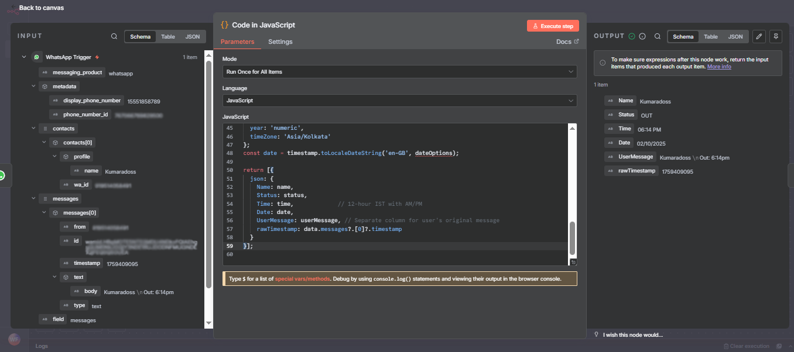
5. Add Google Sheets Node
- Add Google Sheets node after the Code node.
- Set operation to Append Row.
- Connect Google Sheets OAuth2 credentials.
- Paste your Sheet ID (from the URL) and Sheet Name (e.g., “Sheet1”).
- Auto-map/Manually map columns:
- Format Sheet columns with headers for readability.
| Google Sheet Column | Data Mapped From Node |
|---|---|
| Name | Kumaradoss |
| Status | OUT |
| Time | 06:14 PM |
| Date | 02/10/2025 |
| UserMessage | Kumaradoss \nOut: 6:14pm |
| rawTimestamp | 1759409095 |
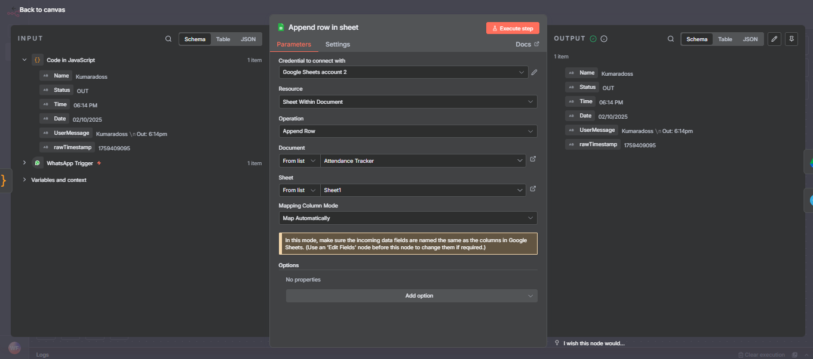
6. Add Google Drive Node
- Add Google Drive node after Sheets.
- Authorize with Google Drive OAuth2 credentials.
- Set operation: update/upload/export your attendance sheet
- Paste your Drive file ID (from Google Drive link, or select in n8n UI)
- Set the filename (e.g.,
Attendance Tracker.xlsx)
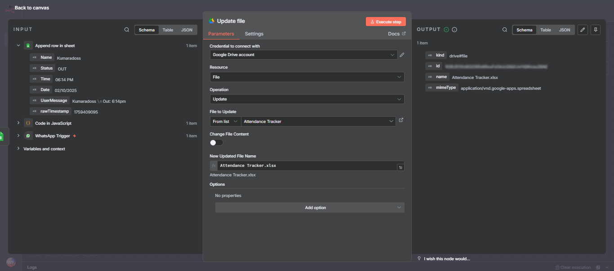
7. Add Telegram Node
- Add a Telegram node for confirmation
- Operation: Send Message.
- Authorize with your bot token (create one using @BotFather).
- Get your chat/group ID (send a message to your bot, then use /getUpdates API to find the ID).
- Set message field (HTML or Markdown allowed):
- Test by sending a sample message and check group for notification.
Drive: Node updates or exports the attendance file for backup/distribution.
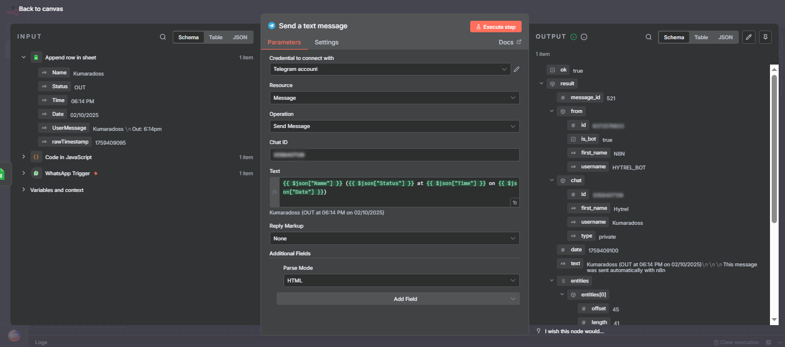
Google Sheet Formatting
- Add columns in Row 1:
- Freeze the first row for clarity.
- Format
DateasDD/MM/YYYY, andTimeashh:mm AM/PMfor dashboards.
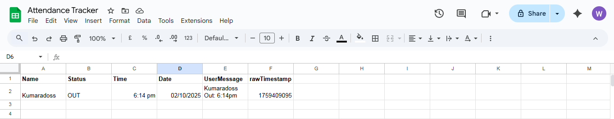
Execution Flow: Example
Sample WhatsApp Message:
Kumaradoss OUT 7:30pm
- Trigger: WhatsApp Trigger node fires on receiving the message.
- Parse: Code node extracts
- Name: “Kumaradoss”
- Status: “Out”
- Time: “06:14 PM”
- Date: Today’s date (auto-formatted IST)
- UserMessage: original text
- rawTimestamp: exact WhatsApp timestamp
- Sheets: Node appends a new row with all data above.
- Drive: Node updates or exports the attendance file for backup/distribution.
- Telegram: Bot sends Kumaradoss (OUT at 07:30 PM on 26/09/2025) to your group/channel.
How to Test
- Send Test WhatsApp Message:
- Message your WhatsApp business number with “Testuser IN 8:55am”.
- Check Google Sheet:
- Confirm a new row is added in real-time.
- Check Google Drive:
- Updated/exported file will appear in your drive or shared folder.
- Check Telegram:
- You (or your HR group) should receive instant confirmation.
- Debugging:
- If any node fails, check execution logs in n8n (shows error, payload, and suggestions).
Error Handling Tips
- Validate message format:
- Enable
errorWorkflow: - Google API Errors:
In the Code node, return an error or skip processing if the message is malformed.
In workflow settings, point errorWorkflow to another workflow
that logs or alerts on errors.
Ensure your OAuth credentials have correct permissions and files are shared appropriately.
Mini-Challenge: Level Up!
Enhance this workflow:
- Add another Code and Sheets node to generate a daily summary (“3 employees present, 2 absent on 26/09/2025”).
- Send the summary at 8pm every day to Telegram or your HR’s email using the Email node.
- Try adding Slack or Discord notifications!
Conclusion
You now have a complete, automated system for capturing, logging, and notifying attendance records in real time using WhatsApp, Google Sheets, Drive, and Telegram — all built in n8n, no coding experience required!
You can further extend it:
- Connect to Slack, Discord, or email for notifications.
- Export monthly reports.
- Integrate with payroll/HR dashboards.
Happy Automating!
Try new integrations, and let n8n handle your busy work!
Other Projects
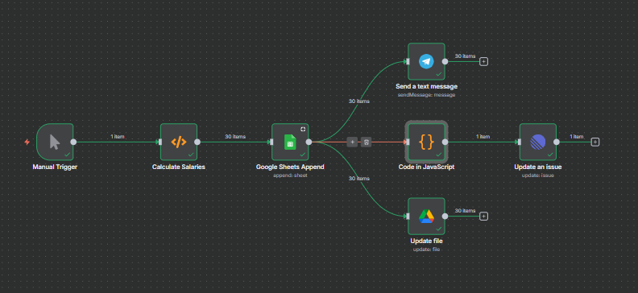
Payroll Automation
Automated Payroll Management with Google Sheets, Telegram, Drive, and Linear (n8n Workflow).
About Website
DevSpireHub is a beginner-friendly learning platform offering step-by-step tutorials in programming, ethical hacking, networking, automation, and Windows setup. Learn through hands-on projects, clear explanations, and real-world examples using practical tools and open-source resources—no signups, no tracking, just actionable knowledge to accelerate your technical skills.
Color Space
Discover Perfect Palettes
AD
Featured Wallpapers (For desktop)
Download for FREE!
.png)
.png)
.png)
.png)
.png)
.png)
AD
AD